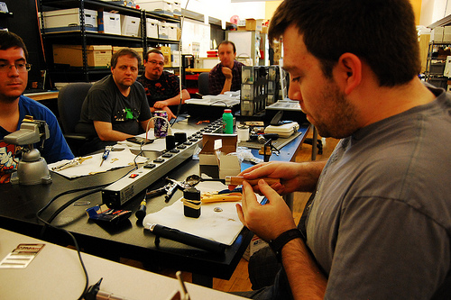
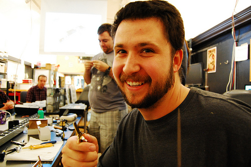
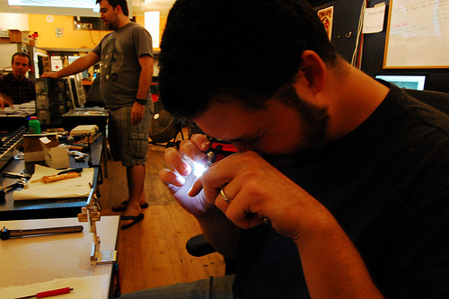
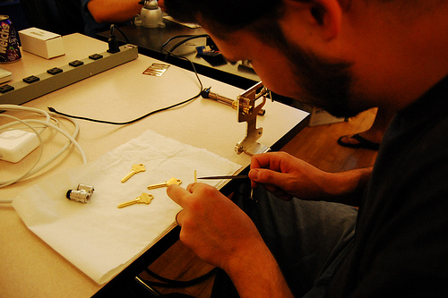

On Saturday, Austin A. hosted his recurring workshop on lockpicking. While the photo below - Austin pouring a duplicate key of soft, indium alloy into a plasticine mold he made from the original - is what a lot of people think of when they hear impressioning, it is apparently just one of a whole range of methods that fall in the impressioning category.

The type of impressioning that Austin spent most of LockSync demonstrating doesn't even require access to a key. As Aaron K. demonstrates below, you just need a lock, a key blank, a rounded file and a good magnifying glass with a light.

First, Aaron inserted the blank into the lock, twisted it to bind one of the pins against the barrel where it is trying to shear and wiggled the key up and down a bit to score the metal with the pin. (Key blanks have been known to break in this process.) Next, he looked for score marks in the blank with a magnifying glass.

Then he filed down the blank with the round file at the place where it was scratched by the pin and repeats the whole process. The idea is that once you've filed down far enough to put a pin in the correct position, it won't bind against the barrel anymore and will stop scoring the blank. The, of course, when all the pins are in the correct position, the lock will open and you will have made a duplicate key.

Austin said that for people who are just starting to learn impressioning, it typically takes about an hour to duplicate a key with this process. But in 2009, a man in an impressioning competition named Jos Weyer duplicated a key in 87 seconds. Austin said that unnamed agents with unnamed agencies have also been known to duplicate keys via impressioning over several weeks, wiggling a key blank in the lock once a day as they walk by, filing blank based in the marks and then trying the lock again the next day.